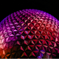
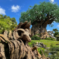

Magic Kingdom
Porque ele não pode ficar de fora do seu roteiro Disney.
O Magic Kingdom é um dos parques mais icônicos do Walt Disney World Resort e um dos principais destinos para quem deseja conhecer o mundo mágico da Disney. Aqui estão alguns motivos para visitar o Magic Kingdom:
- É o primeiro parque construído em Orlando e o principal símbolo da Disney.
- Tem seis áreas temáticas, como Main Street, U.S.A., Fantasyland, Adventureland, Frontierland, Liberty Square e Tomorrowland.
- É um destino perfeito para famílias, com personagens famosos, atrações tradicionais, shows de fogos, paradas Disney e restaurantes.
- É possível tirar fotos com as princesas e conhecer o faroeste.
- O parque tem um clima de contos de fada, com todos os detalhes pensados para criar essa atmosfera.
- O Magic Kingdom é muito limpo, com lixeiras espalhadas a cada 30 passos.
Roteiros parques
Montar o seu roteiro de viagem para a Disney pode não ser a coisa mais simples do mundo. Você precisa definir quantos dias ficar, escolher os parques, a hospedagem, o meio de locomoção. Também há a possibilidade de combinar a ida à Disney com outros destinos nos Estados Unidos. O que não faltam são opções de como fazer uma viagem à Disney, o que pode acabar sendo confuso.
Mas não se desespere! Aqui nós trazemos nossas sugestões e algumas indicações do que considerar ao fazer o seu roteiro para a Disney. Confira:
Magic Kingdom
Epcot
Animal Kingdom
Personagens, onde encontrar nos parques?
Para encontrar os personagens, é importante planejar com antecedência, pois eles aparecem em horários e locais específicos. Alguns personagens só estão presentes em eventos especiais ou temporadas festivas.
Alguns personagens que podem ser encontrados nos parques da Disney são: Minnie Mouse, Figment, Alegria, Moana, Asha, Mickey, Donald, Daisy, Pateta, Stitch.
Além de encontrar os personagens, também é possível fazer refeições com eles em alguns restaurantes dos parques.
Onde se hospedar?
O bairros mais recomendados para ficar em Orlando são Kissimmee, International Drive e Lake Buena Vista. Qual melhor bairro para se hospedar em Orlando? Lake Buena Vista é o melhor bairro para se hospedar em Orlando pela proximidade com os principais parques temáticos.
Orlando foi uma das cidade mais visitada dos Estados Unidos nos últimos anos. Se você está com as passagens aéreas em mãos para em breve contribuir com essa estatística, o seu próximo passo será definir onde ficar em Orlando.
Para decidir sua hospedagem já adianto que será necessário levar diversos pontos em consideração. Orçamento, localização, estilo de acomodação, entre outros.